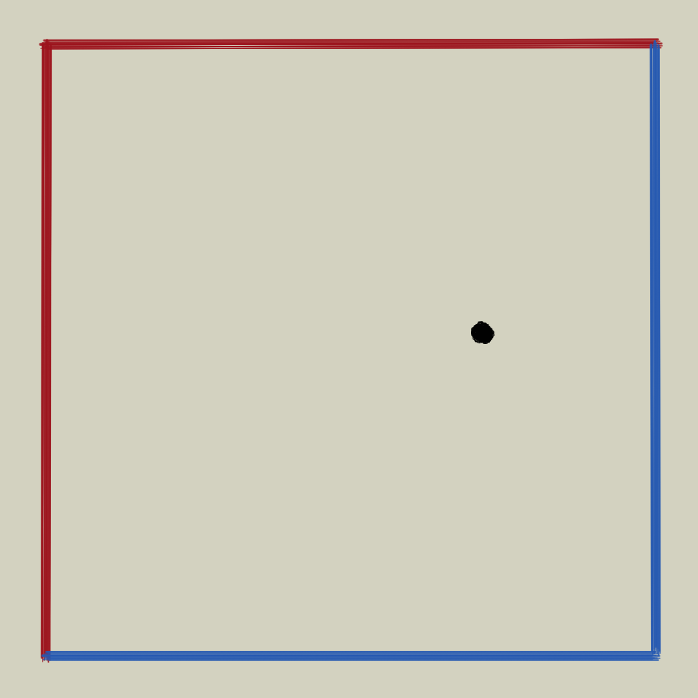
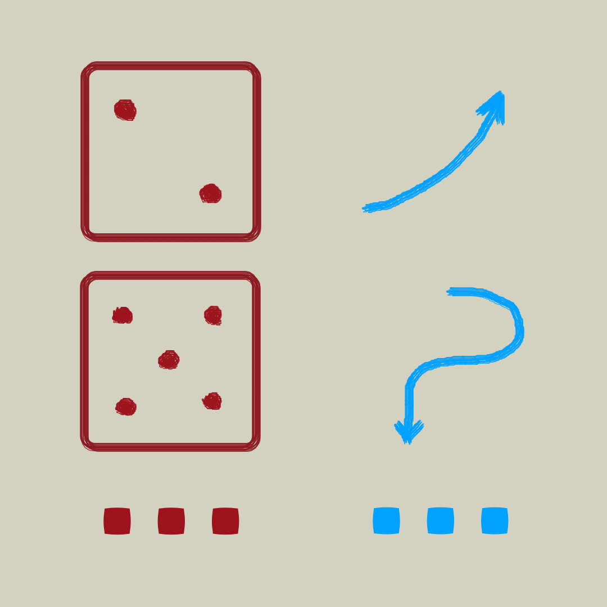
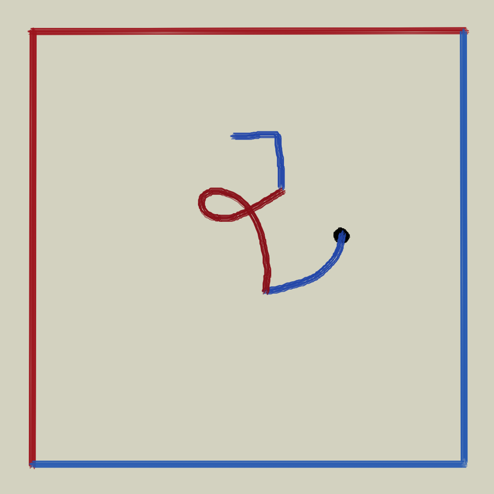
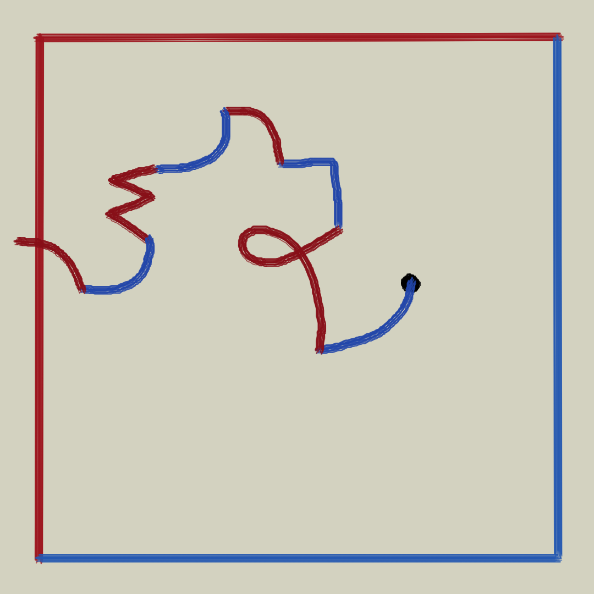

To play escaping lines you will need paper, dice and something to write on (pencils, markers, pens). You can play against fate, although it can be more fun to play in pairs. You can even play in teams of 4 (either individuals or teams).
The board is a sheet of paper, of any size, with a rectangle and a starting point. Be careful! The sides of the rectangle must have at least two different colors. Before starting a round you have to choose a color.
One level of the game consists of a table that links the dice with a path to be drawn. If you play with one die you need to build a 1 x 6 table. If you decide, for example, to play with the sum of two dice, you will need a 1 x 11 table.
In a round, in turns, each player rolls the dice and draws the path indicated by the level table. This is done as accurately as possible from the point reached by the previous move. Whoever starts a round begins from the starting point.
A round ends when the drawn path escapes from the rectangle. At that moment you have to look at what color is the side of the rectangle where the line escaped. The player who has chosen that color before the start of the round gets a point.
The decision to finish the game is up to the players. Part of the joke is to analyze the level board before choosing the color to win. The boards can have any color distribution on their sides. They can have three red sides and a blue side, for example. You can play with 1 die, the sum of two dice, the sum of 3 dice, the lesser of two dice and anything else you can think of.